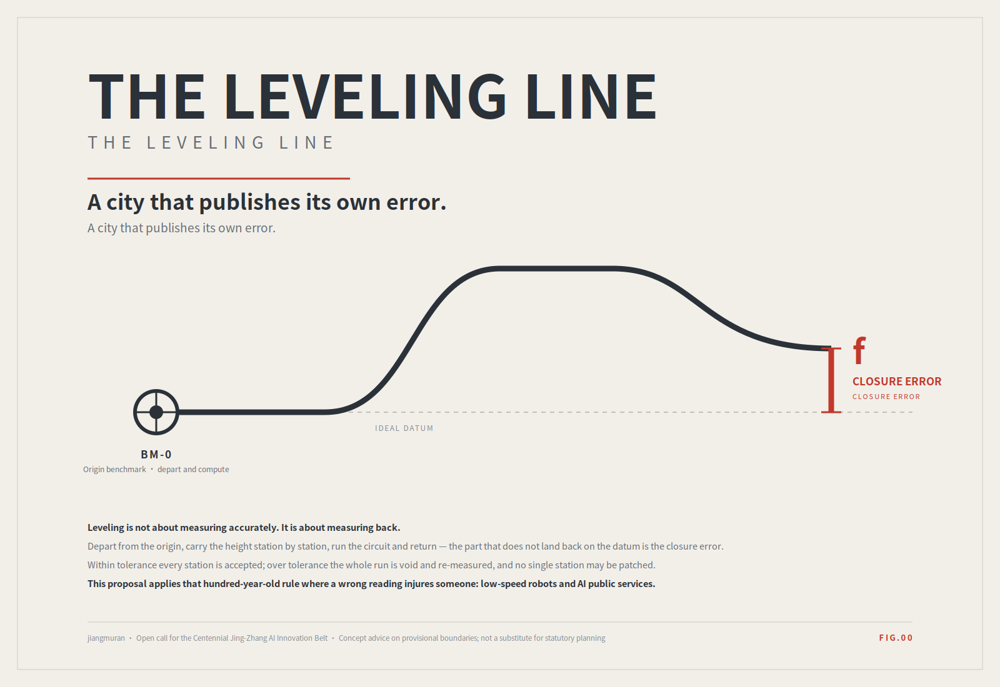
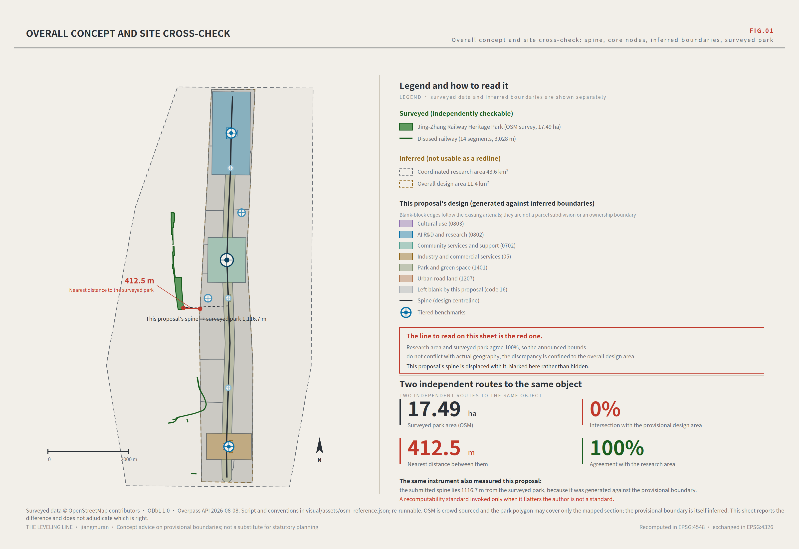
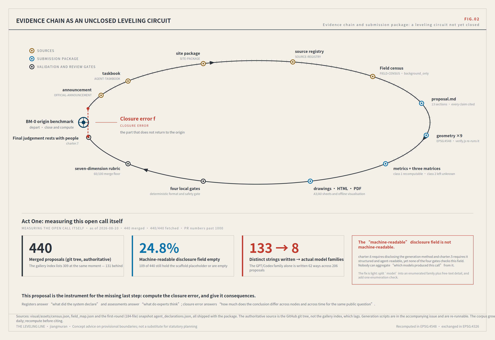
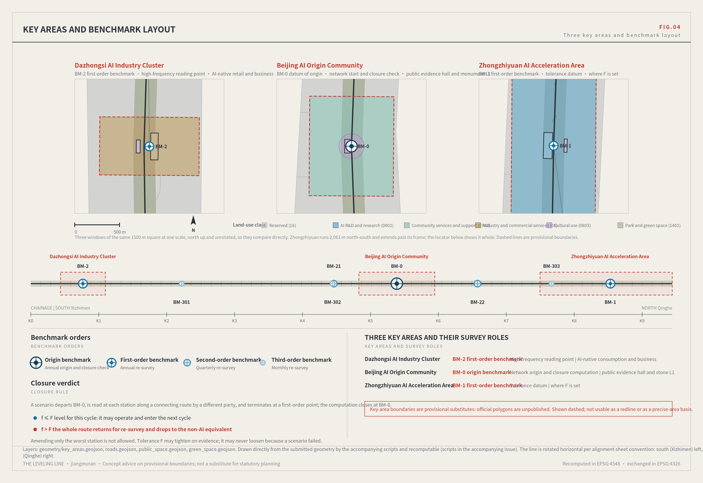
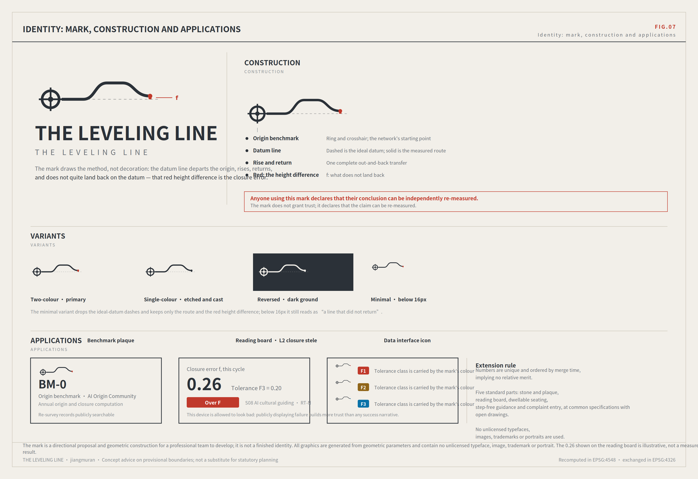
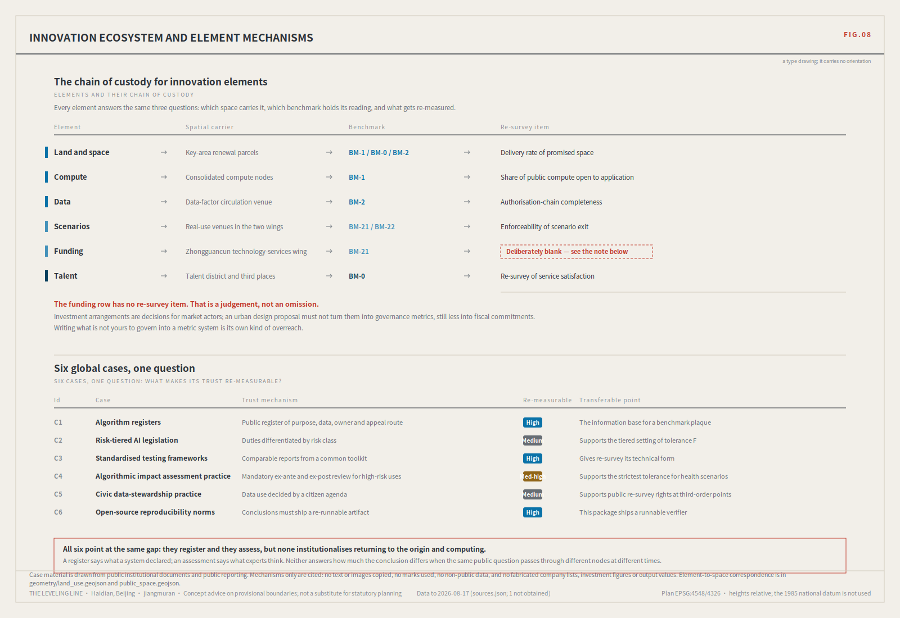
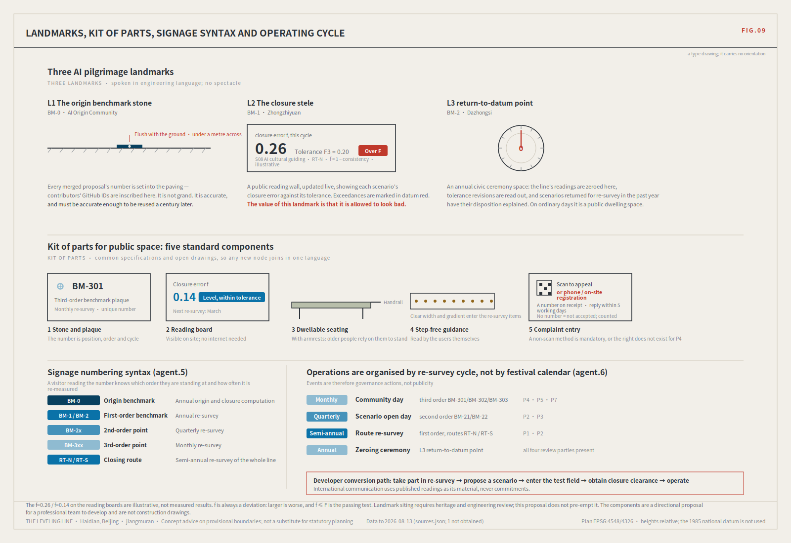
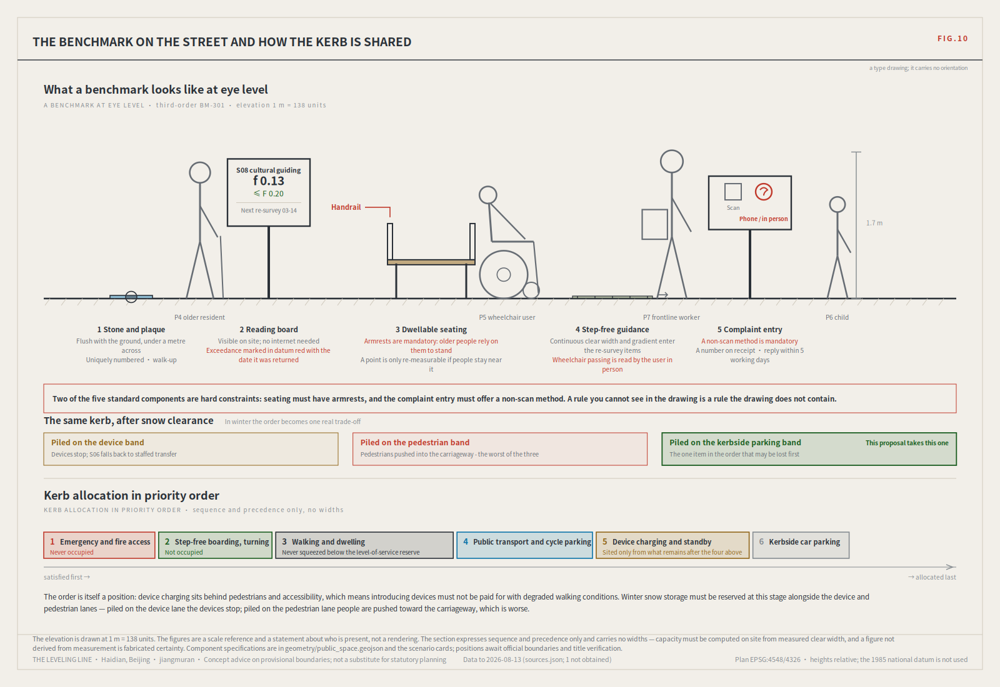
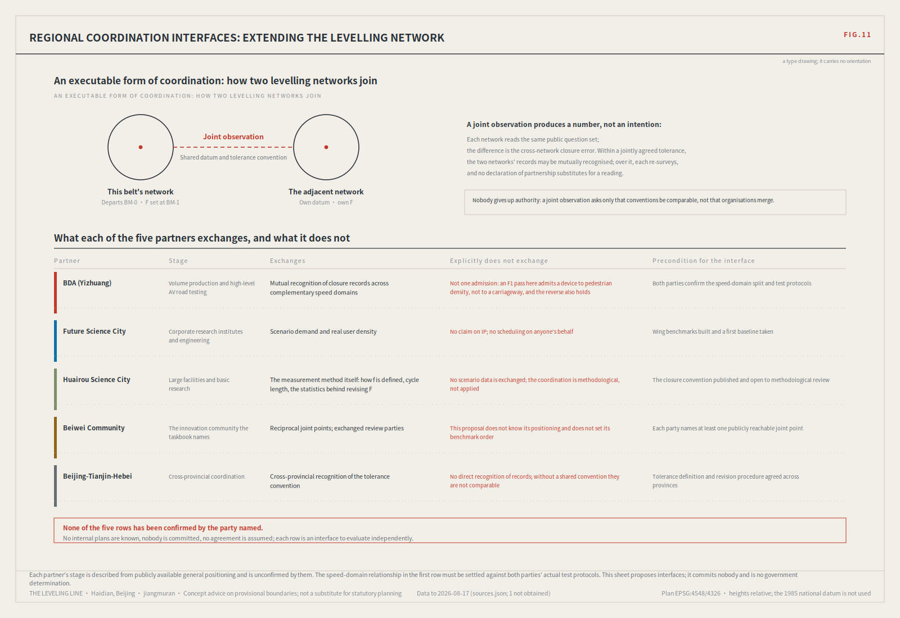

THE LEVELING LINE · a civic AI leveling network that uses closure error as its trust metric
Leveling is not about measuring accurately; it is about measuring back. Depart from a known point, carry the height station by station, run the circuit, return to the origin — and the difference is called the closure error. Within tolerance, every station on the line is accepted; over tolerance, the whole run is void and re-measured, and you may not patch the worst station and keep the rest. That hundred-year-old rule answers this belt's hardest question: on what basis should a city trust its artificial intelligence?
Overview mapALIGNMENT OVERVIEW
geometry/ , recomputed in EPSG:4548.DrawingsSHEETS
All 12 sheets are drawn directly from parameters and the submitted structured data. Click to enlarge.












Three scope levelsTHREE SCOPE LEVELS
| Announcement level | Scale | Network role | Re-survey cycle |
|---|---|---|---|
| Coordinated research area | 43.6 km² | Whole-network control | Annual |
| Overall design area | 11.4 km² | First-order route: spine plus two closing routes | Semi-annual |
| Key areas | 368.4 ha | Origin BM-0 with first-order BM-1 / BM-2 | Quarterly |
The research area decides what to measure, the design area decides which route to measure along, and the key areas decide where to set the stones.
Key areasKEY AREAS
| Area | Survey role | Spatial move |
|---|---|---|
| Zhongzhiyuan AI Acceleration Area | BM-1, the tolerance datum | Tolerance chamber (F set and revised in public); low-carbon social interface toward Qinghe; standard test field |
| Beijing AI Origin Community | BM-0 origin benchmark | Origin benchmark stone and public evidence hall; direct campus-to-park walking link; rail-station integration |
| Dazhongsi AI Industry Cluster | BM-2 high-frequency reading point | Four-quadrant pedestrian connection at the intersection; compound use of planned green space; Dazhongsi station integration |
Land useLAND USE
| Element | Code | Name | Area m² |
|---|---|---|---|
LU-B01 | 0803 | Cultural land (plot of the L1 origin stone and public evidence hall) | 9424.0 |
LU-B02 | 0803 | Cultural land (plot of the L2 closure stele, the public reading wall) | 5032.0 |
LU-B03 | 0803 | Cultural land (plot of the L3 zeroing point, the annual zeroing ground) | 6380.0 |
LU-B04 | 0802 | Research land (plot of the Zhongzhi Park test field and tolerance assembly) | 28420.0 |
LU-B05 | 05 | Commercial land (plot of the Dazhongsi agent-native business frontage) | 25200.0 |
LU-B06 | 1207 | Urban road land (plot of the Xueyuan Road station interchange) | 7820.0 |
LU-001 | 0803 | Cultural use (public evidence hall and origin benchmark stone L1) | 52052.4 |
LU-002 | 0802 | AI R&D and research (Zhongzhiyuan first-order benchmark) | 1895749.9 |
LU-003 | 0702 | Community services and talent support (AI Origin Community) | 981760.6 |
LU-004 | 05 | Industry and commercial services (Dazhongsi high-frequency reading point) | 688874.2 |
LU-005 | 1401 | Park, green and open space (spine green corridor) | 1392297.1 |
LU-006 | 16 | Block 01 left blank by this proposal (existing built-up area, to be subdivided after title, regulatory conditions and retain-renovate-demolish assessment) | 2283849.6 |
LU-007 | 16 | Block 02 left blank by this proposal (existing built-up area, to be subdivided after title, regulatory conditions and retain-renovate-demolish assessment) | 782135.3 |
LU-008 | 16 | Block 03 left blank by this proposal (existing built-up area, to be subdivided after title, regulatory conditions and retain-renovate-demolish assessment) | 617304.3 |
LU-009 | 16 | Block 04 left blank by this proposal (existing built-up area, to be subdivided after title, regulatory conditions and retain-renovate-demolish assessment) | 604410.9 |
LU-010 | 16 | Block 05 left blank by this proposal (existing built-up area, to be subdivided after title, regulatory conditions and retain-renovate-demolish assessment) | 557068.7 |
LU-011 | 16 | Block 06 left blank by this proposal (existing built-up area, to be subdivided after title, regulatory conditions and retain-renovate-demolish assessment) | 457632.3 |
LU-012 | 16 | Block 07 left blank by this proposal (existing built-up area, to be subdivided after title, regulatory conditions and retain-renovate-demolish assessment) | 350009.6 |
LU-013 | 16 | Block 08 left blank by this proposal (existing built-up area, to be subdivided after title, regulatory conditions and retain-renovate-demolish assessment) | 320729.3 |
LU-014 | 16 | Block 09 left blank by this proposal (existing built-up area, to be subdivided after title, regulatory conditions and retain-renovate-demolish assessment) | 246425.0 |
LU-015 | 16 | Block 10 left blank by this proposal (existing built-up area, to be subdivided after title, regulatory conditions and retain-renovate-demolish assessment) | 87405.8 |
LU-016 | 16 | Block 11 left blank by this proposal (existing built-up area, to be subdivided after title, regulatory conditions and retain-renovate-demolish assessment) | 12844.4 |
Classification follows the national Guide to Land and Sea Use Classification for Territorial Space. Benchmark land must be publicly accessible — a point you cannot enter cannot be re-measured, and therefore does not exist.
Transport and walkingMOBILITY
| Element | Order | Name | Length m |
|---|---|---|---|
ROAD-001 | greenway | The Leveling Line spine (continuous walkable public axis) | 9443.3 |
ROAD-002 | pedestrian | North connecting route RT-N | 5401.8 |
ROAD-003 | pedestrian | South connecting route RT-S | 5177.0 |
ROAD-004 | pedestrian | Benchmark access spur: BM-2 | 59.8 |
ROAD-005 | pedestrian | Benchmark access spur: BM-21 | 501.2 |
ROAD-006 | pedestrian | Benchmark access spur: BM-22 | 322.9 |
ROAD-101 | pedestrian | East-west stitching: G6 service road | 90.0 |
ROAD-102 | pedestrian | East-west stitching: G6 service road | 90.0 |
ROAD-103 | pedestrian | East-west stitching: North Third Ring Road | 90.0 |
ROAD-104 | pedestrian | East-west stitching: North Fourth Ring Middle Road | 90.0 |
ROAD-105 | pedestrian | East-west stitching: Beitucheng West Road | 90.0 |
ROAD-106 | pedestrian | East-west stitching: Xueyuan South Road | 90.0 |
ROAD-107 | pedestrian | East-west stitching: Zhixin Road | 90.0 |
ROAD-108 | pedestrian | East-west stitching: Tsinghua East Road | 90.0 |
ROAD-109 | pedestrian | East-west stitching: Shibanfang South Road | 90.0 |
ROAD-110 | pedestrian | East-west stitching: Xizhimen North Street | 90.0 |
ROAD-111 | pedestrian | East-west stitching: Yinquan Road | 90.0 |
This proposal gives connection needs and priorities, not bridge, tunnel, underground or engineering feasibility conclusions. Rail concourses double as third-order benchmarks so re-survey happens where footfall is densest. Universal before intelligent: step-free access, lighting, drainage and shade are preconditions for deploying any smart facility.
Blue-green and public spaceBLUE-GREEN AND PUBLIC SPACE
| Element | Benchmark | Name | Re-survey cycle | Area m² |
|---|---|---|---|---|
PUBLIC-001 | BM-0 | Origin benchmark · AI Origin Community public measurement point | Annual origin and closure computation | 212030.7 |
PUBLIC-002 | BM-1 | First-order · Zhongzhiyuan public measurement point | Annual | 151808.9 |
PUBLIC-003 | BM-2 | First-order · Dazhongsi public measurement point | Annual | 151808.9 |
PUBLIC-004 | BM-21 | Second-order · Zhongguancun technology-services wing access point | Quarterly | 70572.3 |
PUBLIC-005 | BM-22 | Second-order · Xiaoyuehe scenario wing access point | Quarterly | 70572.3 |
PUBLIC-006 | BM-301 | Third-order · North Third Ring south-section community point | Monthly | 25406.0 |
PUBLIC-007 | BM-302 | Third-order · Xueyuan Road rail station point | Monthly | 25406.0 |
PUBLIC-008 | BM-303 | Third-order · Qinghe south-bank community point | Monthly | 25406.0 |
BuildingsBUILDINGS
| Element | Type | Name | Footprint m² |
|---|---|---|---|
BLDG-001 | cultural | L1 origin benchmark stone and public evidence hall | 9424.0 |
BLDG-002 | cultural | L2 closure stele (public reading wall) | 5032.0 |
BLDG-003 | cultural | L3 zeroing point (annual zeroing ceremony space) | 6380.0 |
BLDG-004 | lab | Zhongzhiyuan standard test field and tolerance chamber | 28420.0 |
BLDG-005 | mixed_use | Dazhongsi AI-native business frontage | 25200.0 |
BLDG-006 | mobility_hub | Xueyuan Road station integrated interchange | 7820.0 |
Indicative footprints, showing function and order of magnitude only. They are not building design and give no height or floor-area-ratio conclusion.
Renewal projectsRENEWAL AND PHASING
| Element | Phase | Name | Area m² |
|---|---|---|---|
PHASE-001 | phase_1 | Near term: origin benchmark and F3 scenarios (can start without official regulatory conditions) | 321182.6 |
PHASE-002 | phase_2 | Mid term: spine continuity and the three first-order points (pending official boundaries and engineering review) | 2348205.0 |
PHASE-003 | phase_3 | Long term: the full three-order network and the two wings (pending consecutive compliant mid-phase cycles) | 250923.9 |
Near-term projects can start without official regulatory conditions; the mid phase awaits official boundaries and engineering review; the long phase awaits consecutive compliant mid-phase cycles. All of this is concept advice and constitutes no settled government arrangement or fiscal commitment.
AI scenariosAI SCENARIO CARDS
| Card | Scenarios | Benchmark | Tolerance | Human review point | Exit condition |
|---|---|---|---|---|---|
S01 | Scenario open day and public experience route | BM-0 | F3 | Event safety plan | suspend and restart only after redesign |
S02 | Walking-network break detection and repair | BM-21 BM-22 | F2* | On-site verification of each break | revert to human patrol; the system is demoted to a hint |
S03 | Agent business service desk | BM-2 | F2* | Contractual matters signed by a person | demote to advice only, no acting on the user's behalf |
S04 | AI health service navigation | BM-301 BM-303 | F1* | All clinical advice confirmed by a licensed professional | the whole segment is suspended and re-surveyed; only the human path remains until it passes |
S05 | Data-factor authorisation chain | BM-2 | F2* | Authorisation changes confirmed by a person | circulation of that item stops until the chain is complete |
S06 | Low-speed robot delivery and inspection | BM-21 BM-22 | F1* | Yield to people; human takeover | that machine type is suspended network-wide, not the individual unit |
S07 | Open-source collaboration and release | BM-0 | F3 | Rights clearance of released content | immediate takedown and review, with the finding published alongside |
S08 | AI cultural guiding | BM-0 BM-303 BM-1 | F3 | Historical statements proofread | the whole guide line goes offline for re-checking |
S09 | Daily-service demonstration street | BM-301 | F2* | Prices and licences verified | withdraw from that segment and restore ordinary service |
S10 | Public-safety operations review | BM-1 | F1* | Every disposition is decided by a person | the scenario is terminated, with no re-survey path back |
S11 | AI industry validation field | BM-1 | F1* | Test boundary set by people | the range closes and that party must resubmit |
S12 | Step-free route verification | BM-301 BM-302 BM-303 | F2* | User feedback outranks algorithmic judgement | the human conclusion governs and the register is corrected |
Privacy and human-review boundary, common to all twelve cards:Only public or authorised data; no profiles of identifiable individuals; no undisclosed continuous tracking; any judgement with legal or major life consequences must be made by a qualified person and logged; and every scenario must have an equivalent non-AI service path. None of these boundaries can be waived by operational adjustment.
Key metricsCORE METRICS
site_area_sqmleveling_spine_length_mbenchmark_countgreen_ratiopublic_space_ratiobuilding_footprint_area_sqmkey_area_countrequires official regulatory supportClass-1 metrics are computed from the submitted layers by analysis/recompute_metrics.py , calculation CRS EPSG:4548. Class 2 (floor area ratio, building height, density, setbacks, road redlines) is held at unknown with preconditions recorded — filling estimates into a gap while official data is absent is fabricated certainty. Class 3 (per-scenario closure error f, tolerance compliance rate, non-AI path coverage, resident-initiated re-surveys) has no baseline yet.
Task coverageTASKBOOK COVERAGE
| Requirement | Task | Where this proposal answers it |
|---|---|---|
agent.1 | Overall concept and functional coordination for the belt | Overall concept and naming system | identity direction | the three-areas-two-wings closing circuit |
agent.2 | Full-stack autonomous AI innovation system and ecosystem | Six global cases | ecosystem map and element mechanisms |
agent.3 | AI+ scenarios and a vibrant city | 12 scenario cards | 9 personas | 3 controlled test scenarios |
agent.4 | Public space, new activity and pilgrimage landmarks | Three landmarks L1/L2/L3 | honours display system | public-space kit of parts |
agent.5 | Jing-Zhang heritage and the new AI culture as one narrative | Three cultural periods | signage numbering syntax | international communication |
agent.6 | Global programme and long-term operation | Four tiers of event organised by re-survey cycle | developer conversion path |
Self-check statusSELF-CHECK STATUS
Package type professional_design_package · geometry layers 9 · drawings A3 booklet + A0 boards · figures 9 sheets
spatial self-check present KEY_AREA_PROVISIONAL Note: official polygons are unpublished. This is an organiser data gap, which the repository's rules treat as non-blocking for content scoring. This package labels them as required, official_boundary=false and provisional_constraint.
Act One: measuring this open call itself
As of 2026-08-10 this call had 440 merged proposals (enumerated from the git tree), 440/440 fetched and 0 failures. The corpus grows daily; re-run the census script before citing.
The authoritative source is the GitHub git tree, covering 440 proposals; the gallery index lists 309 at the same moment, 131 behind. Machine-readable disclosure fields left empty: 109(24.8%); and the 331 that are filled in use 133 distinct strings, collapsing into only 8 buckets — the GPT/Codex family alone is written 62 ways across 206 proposals. charter.6 requires disclosing the generation method and charter.5 requires it structured and agent-readable, yet none of the four gates checks this field.Nobody can aggregate “which models produced this call” from it — that governance circuit does not currently close.
To be precise: model a field left at the placeholder does not mean the author concealed the model — many declared it in authorName or in prose instead. This proposal's conclusion is strictly that the machine-readable disclosure field is empty and that the gates do not check it. That is a fixable engineering defect, not a moral charge. Motif detection uses Chinese keyword patterns and misses synonyms, so every convergence share is a lower bound. The corpus changes daily; re-run before citing.
SourceSOURCES
| ID | Type | Use |
|---|---|---|
SITE-PACKAGE | official_public | Project brief, enums, allowed design space, ranges, and schemas. |
SOURCE-REGISTRY | repository_public_registry | Public/cleared/provisional source usability registry; distinguishes formal-ready, background-only, provisional-only, and needs-review materials. |
PROCESSED-FACT-PACK | repository_processed_reference | Agent-readable navigation layer for scopes, required tasks, source-use boundaries, and missing-data checklist; not a new authority source. |
BOUNDARY-SOURCE | agent_inferred_from_public_data | Submitted site boundary geometry source (provisional). |
KEY-AREA-SOURCE | agent_inferred_from_public_data | Three required detailed-design key area boundaries (provisional). |
OFFICIAL-ANNOUNCEMENT | official_public | Official announcement tasks, scope levels, key areas, language, and deliverable context. |
AGENT-TASKBOOK | user_provided_cleared | Agent-facing open-call principles, six required agent tasks, scenario/branding/operation requirements, and boundary clause. |
FIELD-CENSUS-2026-08 | agent_collected_public | Collected for this proposal: an authoritative-source census of every merged proposal in open-city-ai/haidian, enumerating the git tree rather than the lagging submissions-data.js, and measuring track declarations, structural convergence, meta-symbol saturation and the machine-readability of agent.json's generation-method disclosure field. |
OSM-REFERENCE-2026-08 | agent_collected_public | Independent public-data cross-check: OpenStreetMap's surveyed polygon for the Jing-Zhang Railway Heritage Park and the disused railway alignment, tested against the repository's provisional boundaries. |
BARRIER-FREE-ENVIRONMENT-LAW | official_public | Anchors this proposal's equivalent non-AI service path as a statutory duty rather than a design judgement: the article requires venues providing medical, insurance, financial and utility services to retain traditional service methods including on-site guidance and manual handling. |
GENERATIVE-AI-INTERIM-MEASURES | official_public | Article 14 makes stopping generation and transmission on detection a provider obligation, matching this proposal's stop and network-wide suspension rules. Article 15 requires a convenient complaint entry and the publication of the handling process and feedback time limit, matching this proposal's argument that an appeal right without a deadline is unenforceable — which makes that argument not an innovation here but compliance with an existing rule. |
ELDERLY-SMART-TECH-PLAN | official_public | Provides the policy basis for this proposal's hard constraints on persona P4: the plan requires traditional service methods to run in parallel with smart innovation, requires the methods older people know to be retained across daily-life settings, and names a list of high-frequency cases this proposal's scenario cards can be checked against. |
CASE-C1-ALGORITHM-REGISTER | official_public | C1: a field template for the benchmark plaque — purpose, data, responsible party and appeal route, one per line on the plaque. |
CASE-C2-EU-AI-ACT-RISK-TIERS | official_public | C2: support for grading tolerance F1/F2/F3 by severity of consequence rather than technical complexity. |
CASE-C3-AI-VERIFY | official_public | C3: a template for how re-survey is executed — one question set, one convention, readings that compare. |
CASE-C4-NHS-ALGORITHMIC-IMPACT | official_public | C4: support for putting health scenarios at the strictest tolerance F1, and for requiring prescriptive judgements to be made by qualified people and logged. |
CASE-C5-CIVIC-DATA-AGENDA | official_public | C5: support for the public right to initiate a re-survey at a third-order benchmark — the agenda is set by those affected, not by the operator. |
CASE-C6-ARTIFACT-EVALUATION | official_public | C6: the reason this package ships five dependency-free executables and all its data products — so the conclusions can be re-run by a third party, not only read. |
MOHURD-URBAN-DESIGN-MEASURES | official_public | The line this package's compliance matrix uses — that urban design shall implement the plan, guide architectural design, shape the city's character, and coordinate layout in both plan and three dimensions — is taken directly from Article 3: urban design is an effective means of implementing the urban plan, guiding architectural design and shaping the city's distinctive character, coordinating building layout and townscape in both plan and volume. |
MOHURD-CONTROL-DETAILED-PLANNING | official_public | Used to fix this package's boundary at regulatory-plan depth: floor area ratio, building height, density, setbacks and road red lines fall within this measure's approval scope. This package does not supply them; metrics.json keeps them unknown with their preconditions recorded. |
MNR-LAND-USE-CLASSIFICATION-GUIDE | official_public | Land use is expressed with checkable land_use_code values rather than an invented taxonomy; the final basis for any classification must be the official document and professional review. |
MOHURD-ARCH-DESIGN-DEPTH-2016 | official_public | Held only as a missing-document note and a reminder for the next stage; this package draws no architectural-depth conclusion from it. |
Self-collected corpus audit CORPUS-AUDIT-2026-08 graded background_only: it is the empirical basis of this proposal's argument, and is
not evidence for any spatial conclusion or statutory control. The raw data is public repository content; the audit data products ship with this package in visual/assets/, and the fetch and statistics scripts are in the accompanying issue and are re-runnable.
AssumptionsASSUMPTIONS
| Item | Content |
|---|---|
A-BOUNDARY-001 | Precise official polygons for the three scope levels and the three key areas were unpublished as of 2026-08-08. This package uses the provisional substitute boundaries in brief/site-package/geometry/provisional_boundaries.geojson. |
A-CONTROLS-001 | Floor area ratio, building height, density, setbacks, road redlines, title, municipal services and engineering constraints must follow official regulatory conditions and specialist review. |
A-HERITAGE-001 | Official GIS layers for heritage protection zones such as the former Tsinghua Garden Station, construction control areas, and blue and green lines remain a data gap. |
A-CLOSURE-001 | Closure error f, tolerance compliance rate, non-AI path coverage and resident-initiated re-survey counts have no baseline data yet. |
A-CLOSURE-002 | If review parties become homogeneous, the closure error is biased systematically low and loses its meaning. |
A-CORPUS-001 | The corpus audit is based on the most recent census (2026-08-10) of 440 merged proposals, with the GitHub git tree as the authoritative source. Motif detection uses Chinese keyword patterns and misses synonyms. A placeholder left in agent.json's model field does not mean the author concealed the model. |
A-SELF-COUNT-001 | This package's count metrics — scenario cards, personas, landmarks, case studies, renewal projects, phases, land-use classes, errata entries, rights-ledger entries, shipped verification scripts and the rest — are recomputed by the build from shipped artefacts. They measure **what this package delivered**, not any fact about the site or the field. |
A-OSM-001 | OpenStreetMap is crowd-sourced. A park polygon may cover only the built and surveyed part of it; arterial positions are OSM survey, not official centrelines; and a crossing missing from OSM at some point is not a crossing missing on the ground. |
Declared risk: if the review parties become homogeneous, f is biased systematically low and loses its meaning. The mitigation is mandatory diversity of review parties — professional body, operator, resident representatives and international visitors, none omissible — with residents holding an independent right to initiate. This risk must be reassessed after the first re-survey cycle.